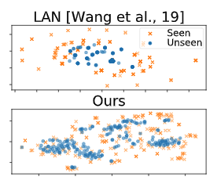

NeurlIPS2020:基于GEN来进行图外链路预测任务
本文最后更新于：4 天前
方法
本文主要介绍了图外(out-of-graph OOG)链接预测任务的图外推网络(GENs)。主要针对的问题是基于两点：1.动态变换的知识图谱 2.知识图谱中的长尾关系
在本文中，作者引入了一个具体的问题，就是不仅在已知实体和未知实体中预测链路，而且在未知实体之间也能进行链路预测的任务。作者提出了一个基于图外推网络的元学习框架通过任务的分布来进行OOG（图外）链路预测任务。
元学习框架
假设我们有一个图$\mathcal{G} \subseteq \mathcal{E} \times \mathcal{R} \times \mathcal{E}$,由$e \in \mathcal{E}$和实体关系$r \in \mathcal{R}$ .那么,我们的学习目标是通过推断知识在给定图G,预测看见和看不见的实体之间的联系:$\left(e, r, e^{\prime}\right)$或$\left(e^{\prime} , r, e\right)$，甚至在看不见的实体之间:$\left(e^{\prime}, r, e^{\prime}\right)$来表示一个分布为$p\left(\mathcal{E}^{\prime}\right)$的未知实体$e^{\prime} \in \mathcal{E}^{\prime}$,本文首先将给定图中的实体随机分割为模拟未知实体的元训练集和实际未知实体的元测试集。然后，在元训练过程中，通过采样模拟的未知实体集来生成一个任务，以便学习到的模型能够泛化到实际的未知实体。
如果我们将已知实体和表示后的未知实体可视化，结果会如图所示：

形式上，每个以$p(\mathcal T)$为分布的任务$\mathcal T$都对应未知实体集合$\mathcal{E}{\mathcal{T}} \subset \mathcal{E}^{\prime}$，并且预先定义这个集合的数量为$N$。然后将这些实体$e{i}^{\prime} \in \mathcal{E}{\mathcal{T}}$关联的三元组分为支持集和查询集：$\mathcal{T}=\bigcup{i=1}^{N} \mathcal{S}{i} \cup \mathcal{Q}{i}$，此时$\mathcal{S}{i}$和$\mathcal{Q}{i}$定义如下：
K是小样本学习的size，$M_i$是每个未知实体关联的三元组数量。我们的元学习目标是学习用一个支持集$\mathcal S$和一个元函数$f$来表示不可见的实体$\phi$，用一个分数函数来最大化查询集合上的三元组分数如下：
在本文中，我们引用这个特定的设置K样本的图外(OOG)链接预测。一旦用元训练任务$\mathcal{T}{\text {train }}$对模型进行训练，我们就可以将其应用到未知的元测试任务$\mathcal{T}{\text {test }}$，它的实体集与$\mathcal{T}_{\text {train }}$不相交。
模型训练单个任务$\mathcal T$时的示意图如下，其利用支持集S通过归纳(Inductive)和转导(Transductive)学习进行知识外推，然后预测与输出嵌入$\phi’$的链接：
图外推网络
为了通过支持集$\mathcal{S}{i}$将给定图$\mathcal{G}$的知识外推到不可见实体，我们提出了一种基于GNN的元学习机，输出未知实体的表示。（图中Inductive层）我们的元学习者$f{\theta}(\cdot)$公式如下：
其中$n(\cdot)$是邻居实体和关系的集合:$n\left(\mathcal{S}{i}\right)=\left{(r, e) \mid\left(e{i}^{\prime}, r, e\right)\right.$ or $\left.\left(e, r, e{i}^{\prime}\right) \in \mathcal{S}{i}\right}$, K是集合中实体和邻居的数量，W是元学习的具体关系变换矩阵，$\mathbf C_{r, e}$是关系-实体对的表示的拼接。
图外推网络上的元学习
本文先前描述了归纳的GEN通过支持集$\mathcal S_i$构造每个未知实体的表示，然后在查询集$\mathcal Q_i$上独立地执行链接预测。这种归纳方案的一个主要缺点是它没有考虑未知实体之间的关系。然而，要将看不见的实体作为一个集合进行同时处理，我们不仅应该考虑已知实体和未知实体之间的关系，还应该考虑未知实体之间的关系。为了解决这个问题，我们扩展了归纳的GEN来进一步执行一个转导推理，这将允许知识在未知实体之间传播。（图中Transductive层）
其中$\mathbf{W}{0} \in \mathbb{R}^{d \times d}$是一个用来关注嵌入$\phi_i$的自连接权重矩阵。为了利用邻域未知实体的知识，本文的Transductive层$g{\theta}(\cdot)$用一个加权矩阵$\mathbf{W}_{r}’ \in \mathbb{R}^{d \times 2d}$聚集了所有邻域的表示，其中邻域可以包含未知实体的嵌入$\phi$，而不是像之前的归纳方案那样把它们当作噪声或者忽略它们为零向量。
随机推断 Stochastic Inference
一个朴素的Transductive GEN通过在元训练中通过已知实体来模拟未知实体来概括未知实体。然而，由于每个实体只有几个三元体的少量OOG链接预测具有内在的不可靠性，因此在未知实体的表示上可能存在很高的不确定性。为了模拟这种不确定性，我们通过学习嵌入$\phi{i}^{\prime}$在未知实体上的分布来随机编码未知实体。为此，我们首先假设真实后验分布有如下形式:$p\left(\phi{i}^{\prime} \mid \mathcal{S}{i}, \phi\right)$。因为计算真实的后验分布是棘手的,我们近似后使用$q\left(\phi{i}^{\prime} \mid \mathcal{S}{i}, \phi\right)=\mathcal{N}\left(\phi{i}^{\prime} \mid \mu{i}, \operatorname{diag}\left(\sigma{i}^{2}\right)\right)$,然后通过两个transductive层计算均值和方差:$\mu{i}=g{\theta{\mu}}\left(\mathcal{S}{i}, \phi\right)$ 和 $\sigma{i}=g{\theta{\sigma}}\left(\mathcal{S}{i}, \phi\right)$。最大化分数函数$s$的形式定义如下：
为提高计算效率，作者在元训练meta-traning时将MC样本量设为L = 1。此外，我们在元测试meta-test时使用足够大的样本量(例如L = 10)进行MC近似(MC approximation)。然后，我们的最终GEN通过随机推理训练Inductive和Transductive步骤。
损失函数
每个任务$\mathcal T$对应一组未知实体$\mathcal{E}{\mathcal{T}} \subset \mathcal{E}^{\prime}$，包含了一个支持集和一个查询集组成:$\mathcal{T}={\mathcal{S}, \mathcal{Q}}$。在训练过程中，我们使用支持集$\mathcal S$来表示未知实体$e{i}^{\prime} \in \mathcal{E}{\mathcal{T}}$的嵌入。然后，在测试时，我们使用正样本的查询集$\mathcal{Q}{i}$来优化我们的GEN。由于每个查询集只包含正采样的三元组，我们执行负采样，通过允许元学习者区分正三元组和负三元组来更新元学习者。具体来说，我们替换查询集中每个三元组的实体:$\mathcal{Q}{i}^{-}=\left{\left(e{i}^{\prime}, r, e^{-}\right)\right.$ or $\left.\left(e^{-}, r, e_{i}^{\prime}\right) \mid e^{-} \in \mathcal{E}\right}$，其中$e^-$为负采样的实体。然后我们使用铰链损失优化我们的模型如下：
训练过程
上述的三元组打分函数可以用如下几种方式实现：
实验
本博客所有文章除特别声明外，均采用 CC BY-SA 4.0 协议 ，转载请注明出处！